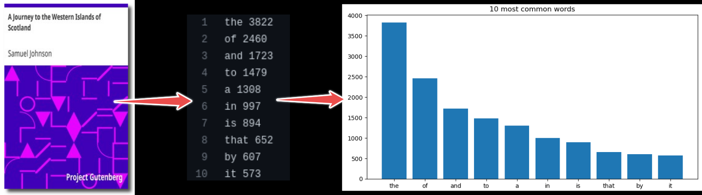

Recording computational steps
Objectives
Understand why and when a workflow management tool can be useful
Questions
You have some steps that need to be run to do your work. How do you actually run them? Does it rely on your own memory and work, or is it reproducible? How do you communicate the steps for future you and others?
How can we create a reproducible workflow?
Instructor note
5 min teaching
15 min exercise/demo
Several steps from input data to result
The following material is partly derived from a HPC Carpentry lesson.
In this episode, we will use an example project which finds most frequent words in books and plots the result from those statistics. In this example we wish to:
Analyze word frequencies using code/count.py for 4 books (they are all in the data directory).
Plot a histogram using plot/plot.py.
{kind=link}

Example (for one book only):
$ python code/count.py data/isles.txt > statistics/isles.data
$ python code/plot.py --data-file statistics/isles.data --plot-file plot/isles.png
Another way to analyze the data would be via a graphical user interface (GUI), where you can for example drag and drop files and click buttons to do the different processing steps.
Both of the above (single line commands and simple graphical interfaces) are tricky in terms of reproducibility. We currently have two steps and 4 books. But imagine having 4 steps and 500 books. How could we deal with this?
As a first idea we could express the workflow with a script. The repository includes such script called run_all.sh.
We can run it with:
$ bash run_all.sh
This is imperative style: we tell the script to run these steps in precisely this order, as we would run them manually, one after another.
Often a script becomes too long to manage. When that happens, it should become part of your source code and you should call it in a script.
Tools
Many specialized frameworks exist.
Keypoints
Computational steps can be recorded in many ways.
Workflow tools can help if there are many steps to be executed and/or many datasets to be processed.